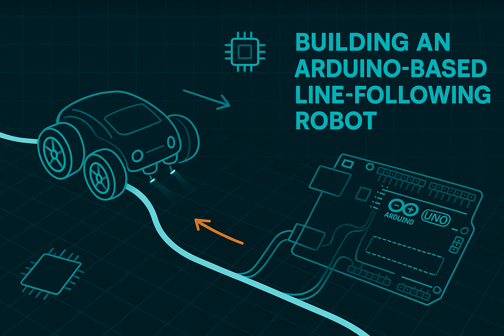

Jun, 2025
Building an Arduino-Based Line-Following Robot
Learn how to assemble a compact line-following robot using an Arduino UNO, infrared sensors, and simple motor control logic. This quick guide walks you through wiring, calibrating the sensors, and programming the PID loop so your robot can smoothly trace a course with reliable, autonomous navigation..